HEXPLO
Partager de bon spots entre aventuriers
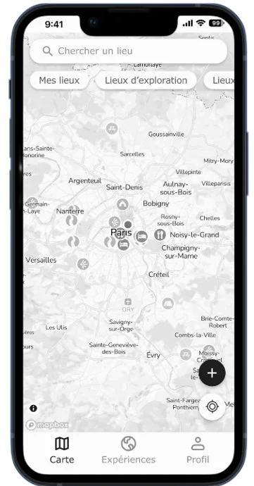
Hexplo
une application incitant ses utilisateurs à découvrir et partager des lieux et des expériences en plein-air afin de créer une communauté de partage.
Problème
La fonctionnalité de partage d'expérience est difficile à comprendre et n'est accessible que depuis l'onglet "Carte", ce qui complique son utilisation. De plus, l'onglet “Communauté” ne propose pas d'expériences adaptées aux profils des utilisateurs, rendant la navigation moins pertinente. Enfin, l'onglet “Abonnement” est confus, avec un terme peu explicite et une fenêtre vide pour les utilisateurs n'ayant pas encore d'abonnements, ce qui peut prêter à confusion.
Contexte
L’objectif est de donner à des utilisateurs aux profils variés l’envie de partager leurs expériences pour renforcer le côté social et communautaire de l’application.
Outils
-
Figma
-
Figjam
-
Google Docs
Équipe
-
4 UX/UI designers
Mon rôle
-
UX/UI design
-
UX Research
-
Maquettage
-
Prototypage
Date limite
-
4 jours design sprint
Atelier Brainwriting + Dot-voting : Choisir les hypothèses
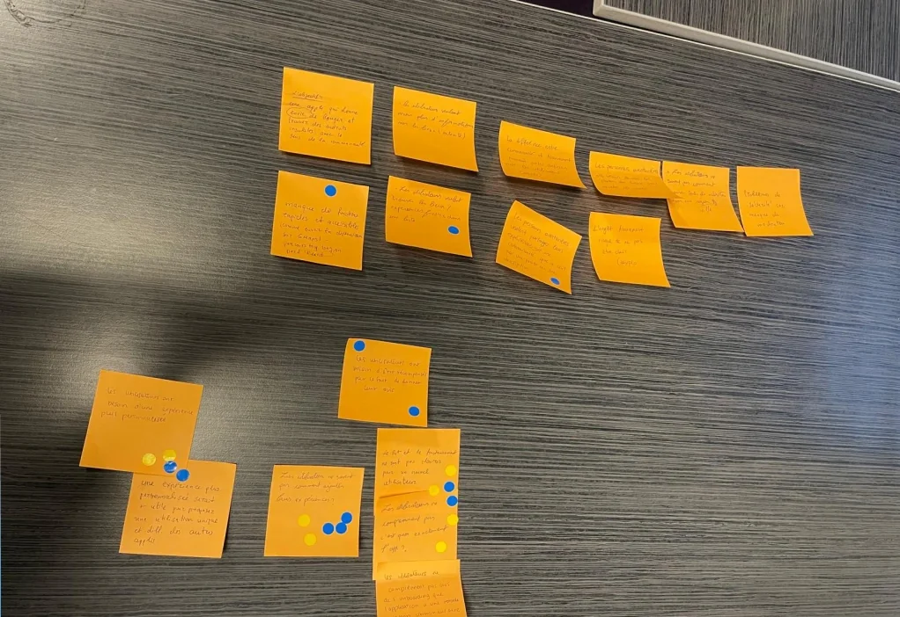
Atelier Dot-Voting
Hypothèses
-
But de l’application : Les utilisateurs ne comprennent pas le but de l’application.
-
Besoin des utilisateurs : Les personnes aventurières veulent partager leurs expériences au sein d’une communauté.
-
Gamification : Les utilisateurs ont besoin d’être récompensés par le fait de donner leurs avis.
-
Personnalisation : Les utilisateurs ont besoin d’une expérience plus personnalisée.
Le concept:
“ Optimiser le partage d’expériences
pour une meilleure personnalisation.”
Recherche
"Faire des entretiens afin d'Affirmer ou réfuter des hypothèses pour comprendre les utilisateurs"
Interviews
-
2 hommes et 2 femmes de 22 à 38 ans aimant tous les activités en plein-air.
-
Parmi leurs activités préférées, la randonnée et le vélo ont été mentionnés plusieurs fois.
-
Plutôt à l’aise avec le numérique, la moitié des interrogés a dit utiliser deux applications similaires à Hexplo : AllTrails et Visorando.
Après les interviews, deux hypothèses ont été validées : les personnes aventurières veulent partager leurs expériences au sein d’une communauté, et les utilisateurs ont besoin d’une expérience plus personnalisée.
Test d'utilisabilité
-
Partagez une expérience sur l’application.
-
Ajoutez un lieu sur l’application.
-
Abonnez-vous à une personne sur l’application.
-
Comprendre et trouver l’onglet “Abonnements”.
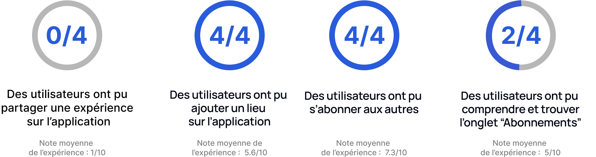
Les résultats du test d’utilisabilité
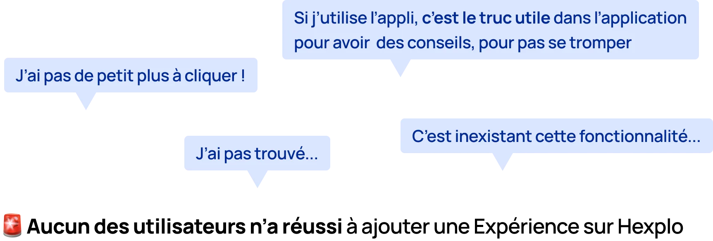
👤Persona
Nous souhaitions mieux comprendre les objectifs, les besoins, les expériences et les comportements de nos utilisateurs. Nous avons donc créé des profils pour nos segments d'utilisateurs, basés sur des entretiens et des enquêtes.
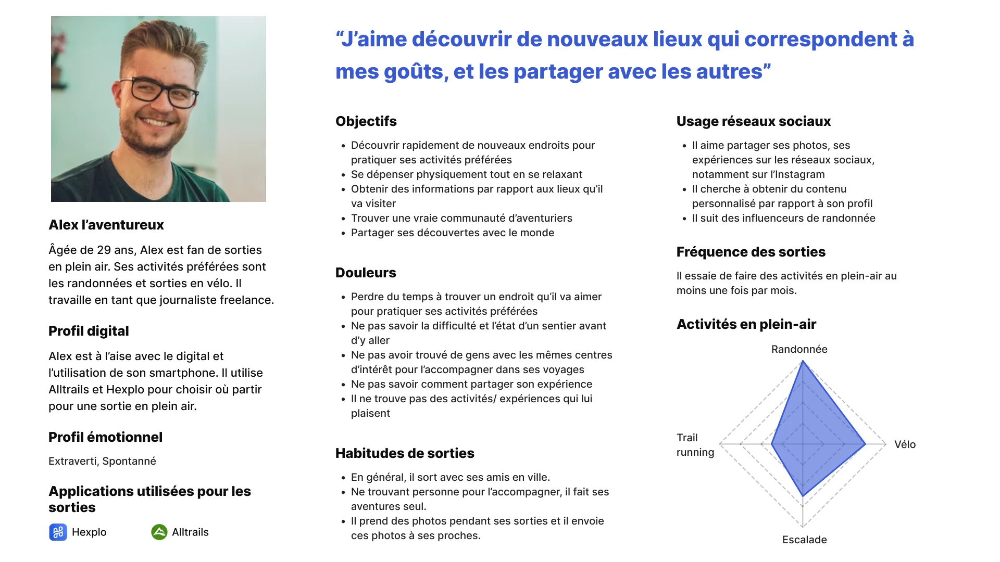
⛰ Le parcours d’Alex lors d’une randonnée
Nous avons défini notre parcours utilisateur afin de mieux comprendre nos utilisateurs. Découvrons le parcours d'Alex.
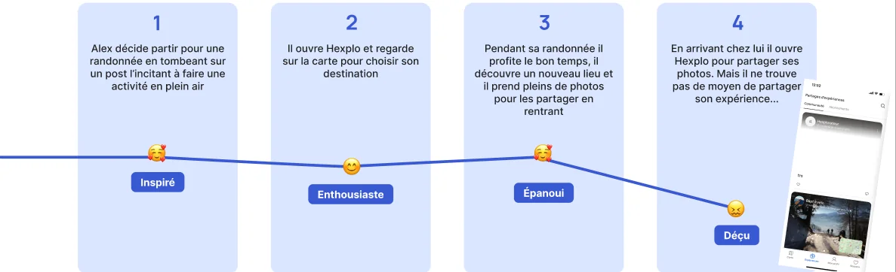
Actions et sentiments d'Alex tout au long du parcours
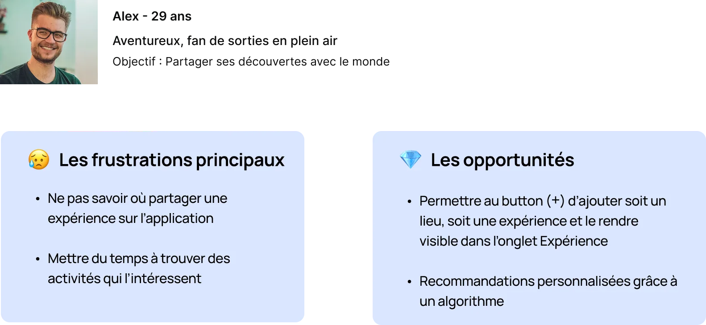
Pensées et points douloureux d'Alex tout au long du parcours
✨ Les frustrations et les opportunités
Atelier Dot-voting : Créer le storyboard pour arriver au prototype
Déterminer comment Alex utilisera notre solution pour arriver à son but : faire une sortie en plein-air et la partager sur Hexplo.
Nous avons réalisé une session d'idéation et nous avons voté pour les meilleures idées . Ensuite, chaque personne de groupe a fait son storyboard et nous avons voté pour le meilleur storyboard.
Approche de conception
Mise en avant de l'option d'ajout d’expérience
-
Intégration d’un bouton “+” persistant sur toutes les pages pour un accès rapide.
-
Nouvelle fonctionnalité : Lors de l’ajout d’une expérience, l’utilisateur peut choisir un lieu existant ou, si le lieu n’est pas encore référencé, avoir la possibilité de l’ajouter avant de partager son expérience. Cela simplifie l’ajout d’expériences même dans les cas où un lieu n’est pas encore dans la base de données.
-
Ajout d’une barre de progression pour indiquer l’étape actuelle et rassurer l’utilisateur sur l’avancement de son partage.
Expérience enrichie pour aider les autres utilisateurs
Les expériences partagées doivent être utiles et complètes. L’enjeu est donc d’inciter les utilisateurs à ajouter des informations essentielles sans complexifier le parcours.
-
Ajout de champs optionnels pour enrichir l’expérience : horaires, site web, contacts…
Personnalisation et recommandations adaptées
L’expérience utilisateur ne se limite pas au partage, elle inclut aussi la découverte de contenus pertinents et de personnes. L’onglet "Suivis", anciennement nommé "Abonnements", a été repensé pour éviter toute confusion avec des abonnements payants.
-
Proposer des profils à suivre en fonction des intérêts de l’utilisateur.
-
Dans l’onglet Communauté, offrir un tri des expériences par pertinence, distance ou récence pour une navigation plus fluide.
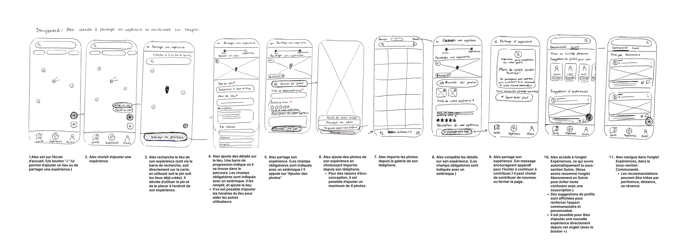
Storyboard choisi
Une fois nous avons voté sur ce storyboard nous avons crée les wireframes de notre produit.
-
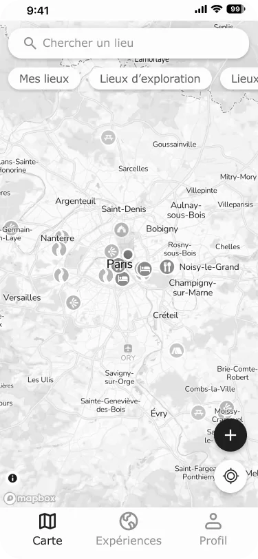
-
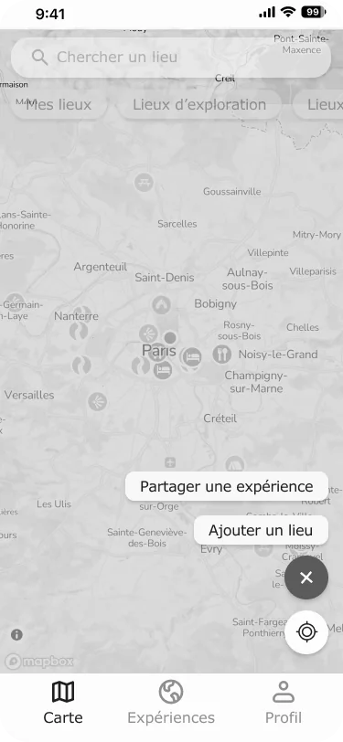
-
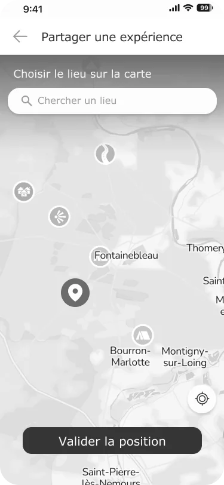
-
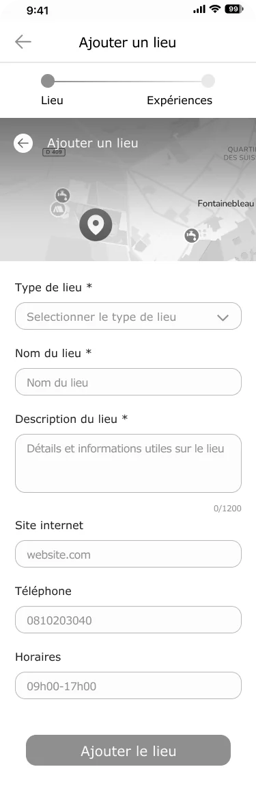
-
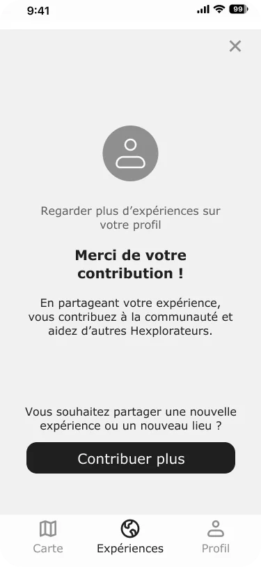
-
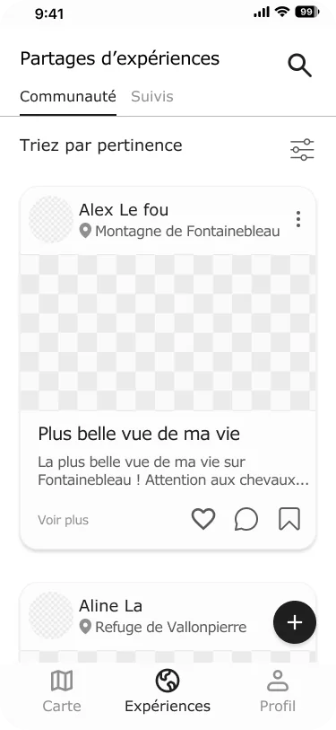
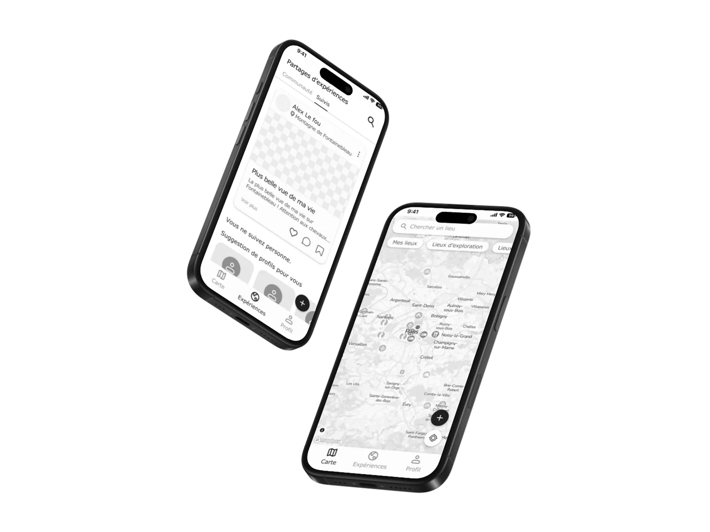
Wireframe de l'application Hexplo
🚀 Les plus
-
Taille de texte minimum à 16 px.
-
Police : Verdana police système
-
Le nombre de photos est limité à 4
🚀 Recommendations & Les prochaines étapes
-
Ajouter un onglet FAQ ou un chatbot
-
Modération sur l’ajout des lieux pour des mesures de sécurité
-
Tester le prototype & le réitérer
-
Définir le modèle économique (endroits cachés, comptes premiums...)
-
Promouvoir Hexplo